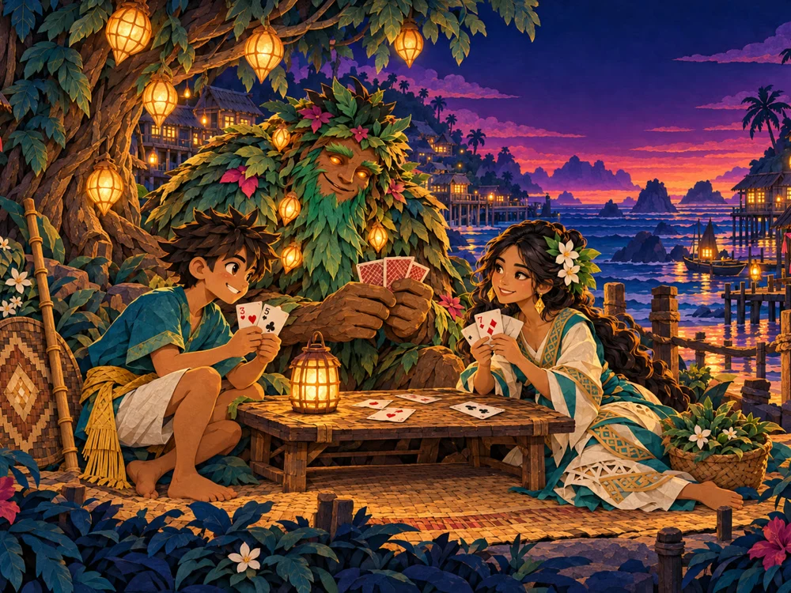
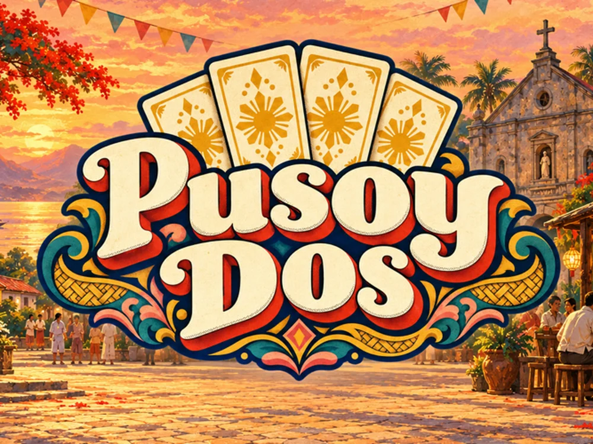
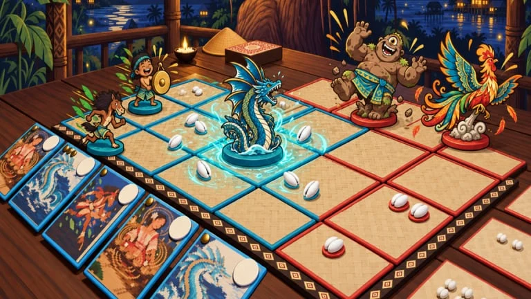
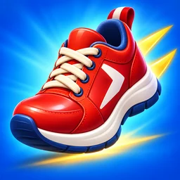
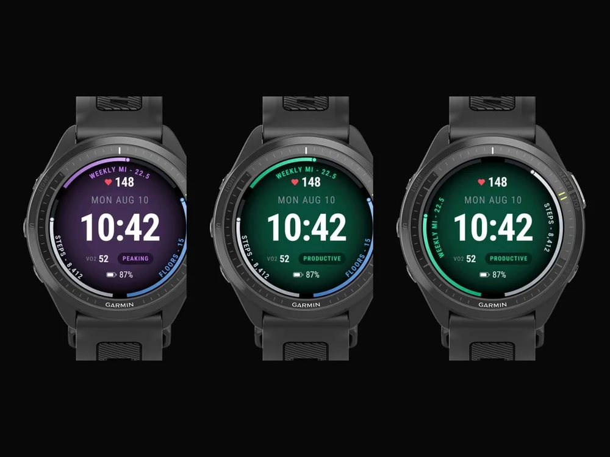
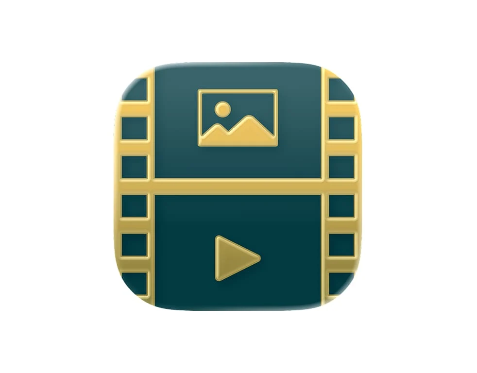
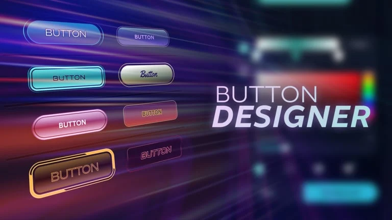

Dusk Dos
Pusoy Dos as a roguelike: climb the Isles of Dusk table by table against creatures of Philippine folklore, each bending one rule.


Pusoy Dos as a roguelike: climb the Isles of Dusk table by table against creatures of Philippine folklore, each bending one rule.

The Filipino card game for iPhone and Android, with a journey through Philippine history and its real heroes on the court cards.

A cozy Roblox world of dress-up, rooms full of props and drag-and-drop play, where players keep their own avatars, restyled into its look.

A card battler of Philippine folklore on Roblox and phones: claim the board row by row, island after island.

A match-three running game.

A rhythm game inspired by the Filipino bamboo dance.

Roadwork and Revital, two watch faces on the Connect IQ Store: one for runners' training, one for Body Battery and stress.

Your runs in 3D: Strava, Garmin and Apple Health routes on real terrain, with weather, splits and stickers to share. Rebuilt in Unity for 2.0.

Combines photos and videos into one shareable video, with simple layouts and transitions that keep the focus on the content.

Run stats from Strava or Apple Health on top of your photos and videos, native on iOS and Android.

A Photoshop-like button editor built inside Roblox in a weekend: color pickers, documents, a remixable feed and premium effects.